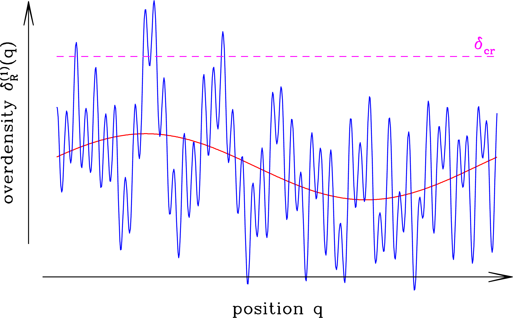
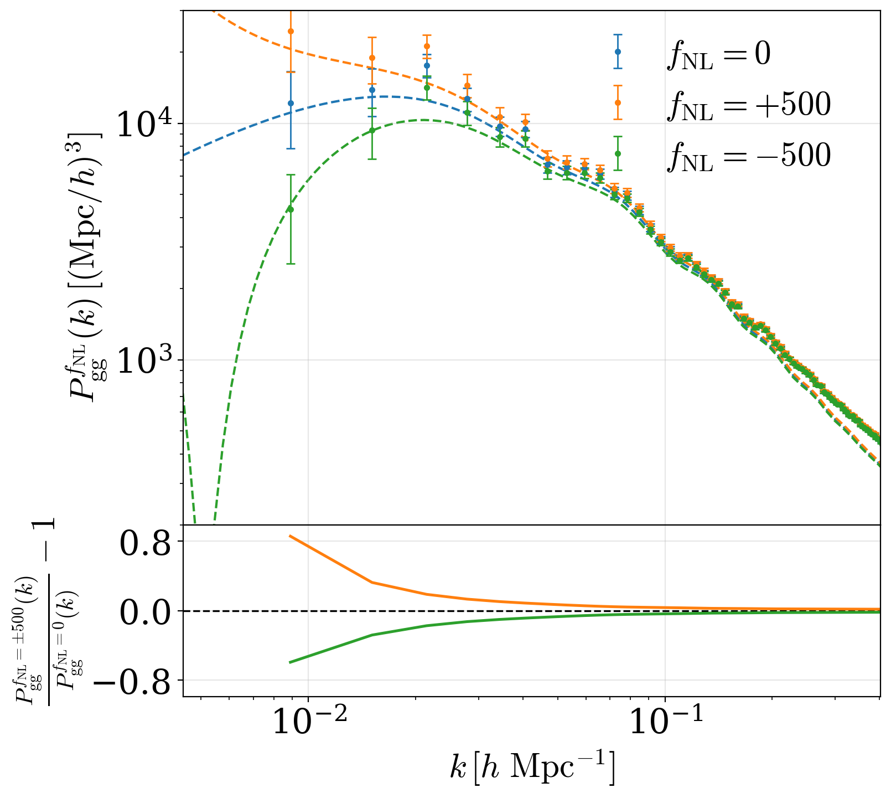
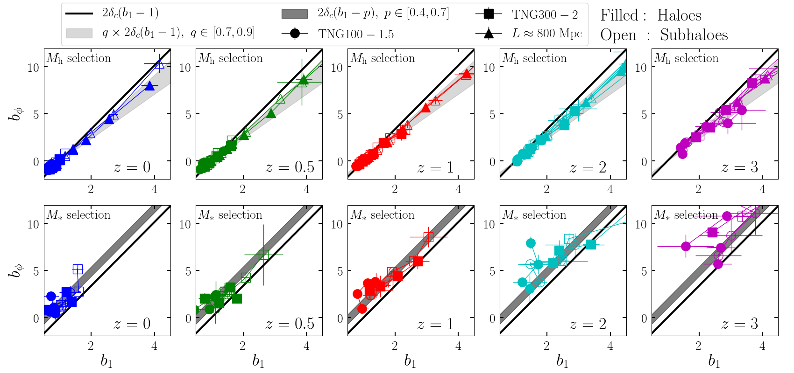
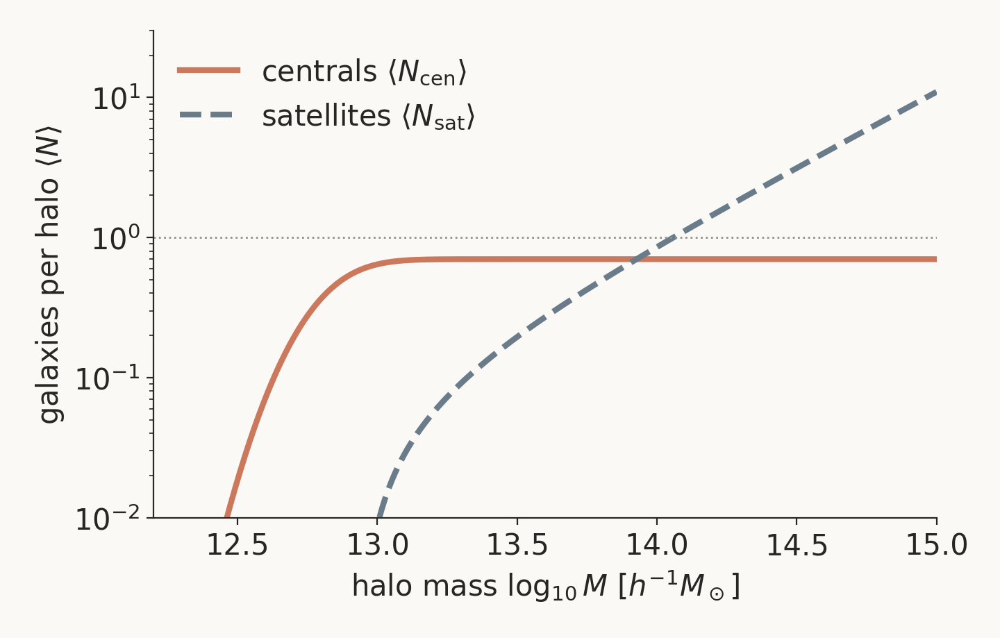
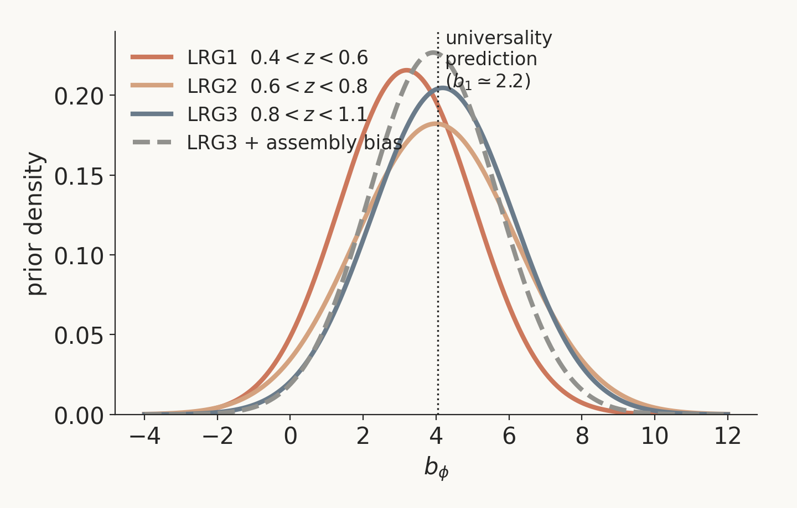
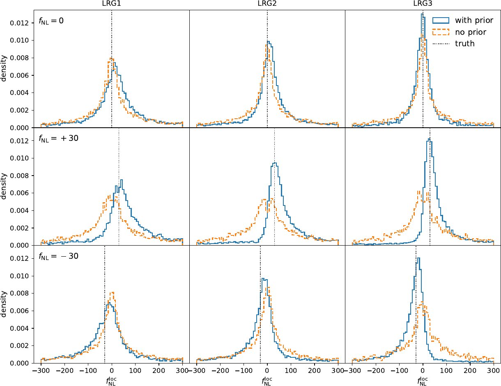
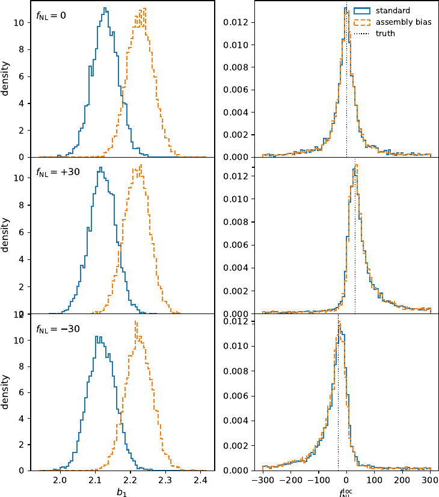

How I stop worrying about non-universality and \(b_\phi\)
Jiaxi Yu (禹佳希) & Nhat-Minh Nguyen (Nguyễn Nhật Minh)
arXiv:2607.01314 · Kavli IPMU & ICISE ·
github.com/MinhMPA/bphi-prior-from-hod-posterior
Single-field slow-roll inflation predicts
\[ f_{\rm NL} \simeq \tfrac{5}{12}\,(n_s - 1) \sim 10^{-2} \]
A detection of \(|f_{\rm NL}| \gtrsim 1\) rules out all single-field models.
CMB (Planck): \(\sigma(f_{\rm NL}) \approx 5\). Galaxy surveys (DESI → MUST, Spec-S5, WST) aim at \(\sigma(f_{\rm NL}) \sim \mathcal{O}(1)\).
\[ \phi(\boldsymbol{x}) = \phi_{\rm G}(\boldsymbol{x}) + f_{\rm NL}\left[\phi_{\rm G}^2(\boldsymbol{x}) - \langle\phi_{\rm G}^2\rangle\right] \]

\[ P_{gg}(k) = \Big[\, b_1 + \frac{\color{#CC785C}{b_\phi f_{\rm NL}}}{\mathcal{M}(k)} \Big]^2 P_{mm}(k) + P_{\rm shot} \]

Galaxy clustering only measures the product
\(b_\phi \times f_{\rm NL}\)
Without independent knowledge of \(b_\phi\): no central value, no error bar on \(f_{\rm NL}\) alone.
\(b_\phi\) = response of the galaxy sample to the primordial potential — set by messy galaxy formation, not by inflation.
\[ b_\phi = 2\delta_c\,(b_1 - 1) \]

The three fail differently — their agreement (or not) is itself informative.
Probability that a halo of mass \(M\) hosts galaxies:
\[ \langle N_{\rm cen}\rangle = \tfrac{f_{\rm ic}}{2}\, {\rm erfc}\!\left[\tfrac{\log_{10}(M_{\rm cut}/M)}{\sqrt{2}\,\sigma}\right], \quad \langle N_{\rm sat}\rangle = \langle N_{\rm cen}\rangle \left(\tfrac{M - \kappa M_{\rm cut}}{M_1}\right)^{\alpha} \]



| Treatment of \(b_\phi\) | Assumption | \(\sigma(f_{\rm NL})\), LRG3, \(f_{\rm NL}^{\rm true}=0\) |
|---|---|---|
| No prior (product only) | none | \(\approx 80\) |
| HOD-derived prior (this work) | HOD from small-scale clustering | \(\approx 44\) |
| Universality, \(p=1\) | exact \(b_\phi = 2\delta_c(b_1{-}1)\) | \(\approx 23\) |
Small-scale clustering of the same galaxies
can anchor \(b_\phi\) — no universality assumption needed.
Code: MinhMPA/bphi-prior-from-hod-posterior · arXiv:2607.01314 · Thank you!
| Parameter | LRG1 | LRG2 | LRG3 |
|---|---|---|---|
| \(\log M_{\rm cut}\) | \(\mathcal{N}(12.79, 0.45^2)\) | \(\mathcal{N}(12.64, 0.51^2)\) | \(\mathcal{N}(12.68, 0.38^2)\) |
| \(\log M_1\) | \(\mathcal{N}(13.88, 0.33^2)\) | \(\mathcal{N}(13.71, 0.21^2)\) | \(\mathcal{N}(13.60, 0.47^2)\) |
| \(\sigma\) | \(\mathcal{N}(0.15, 0.24^2)\) | \(\mathcal{N}(0.09, 0.27^2)\) | \(\mathcal{N}(0.37, 0.20^2)^*\) |
| \(\alpha\) | \(\mathcal{N}(1.07, 0.48^2)\) | \(\mathcal{N}(1.18, 0.39^2)\) | \(\mathcal{N}(0.72, 0.34^2)^*\) |
| \(\kappa\) | \(\mathcal{N}(1.40, 1.80^2)\) | \(\mathcal{N}(0.60, 1.20^2)\) | \(\mathcal{N}(0.51, 0.43^2)^*\) |
| \(\alpha_c,\ \alpha_s\) | \(\mathcal{N}(0.33, 0.21^2),\ \mathcal{N}(0.80, 0.21^2)\) | \(\mathcal{N}(0.19, 0.27^2),\ \mathcal{N}(0.95, 0.21^2)\) | – |
| \(f_{\rm ic}\) | \(\mathcal{N}(0.70, 0.45^2)\) | \(\mathcal{N}(0.62, 0.21^2)\) | \(\mathcal{N}(0.19, 0.14^2)^*\) |
LRG1/2 widened to \(3\sigma_{\rm HOD}\); LRG3 kept at \(1\sigma_{\rm HOD}\) (already broad). * clipped at 0.01. Cross-covariances neglected.

| \(f_{\rm NL}^{\rm true}\) | bfnl, no prior | bfnl + prior | bphi + prior | universality \(p=1\) |
|---|---|---|---|---|
| 0 | \(-0.9^{+79.1}_{-81.0}\) | \(-1.5^{+42.2}_{-46.3}\) | \(-0.3^{+43.0}_{-40.2}\) | \(-0.6^{+23.6}_{-23.4}\) |
| +30 | \(-0.9^{+106.6}_{-103.7}\) | \(37.2^{+63.9}_{-29.9}\) | \(37.5^{+61.9}_{-30.3}\) | \(33.3^{+23.0}_{-22.4}\) |
| −30 | \(-0.9^{+100.3}_{-96.7}\) | \(-30.8^{+32.8}_{-63.3}\) | \(-31.4^{+33.6}_{-64.9}\) | \(-27.1^{+23.6}_{-24.0}\) |
Importance-reweight the sampled \(\{B_i\}\) chain onto an \(f_{\rm NL}\) grid, letting the \(b_\phi\) prior supply what the data lack:
\[ \ln W = -N_{\rm bin}\ln|f| \;-\; \tfrac{1}{2}\sum_i \left( \frac{B_i/f - \mu_{b_\phi,i}}{\sigma_{b_\phi,i}} \right)^2 + {\rm const.} \]